![This is the image shows ICT cornor which is helpful for travel around the world. Travel to the planets and stars and enjoy the adventure! Let explore the land forms on Google Earth app. step 1: use the given link to land on google earth. step 2: use search button on the left top corner to locate the places on the globe. for example delhi, chennai, keezhadi etc., Step 3: press plus or minus buttons on screen or use mouse scroll button to zoom in and zoom out the landscaps and occeans. step 4: scan and locate the plateaus to understand the landscape structure. scan and locate the plains and valley. URL to launch google earth: https://earth.google.com/web/](images/image-329.png)
To understand the continents and oceans.
To learn about the characteristic features of different landforms and oceans.
To know about the classification of landforms.
To understand the oceans and its features.
Pathway
This lesson focuses on the land and oceans found on Earth. It deals with the classification of landforms - first, second and third order landforms.
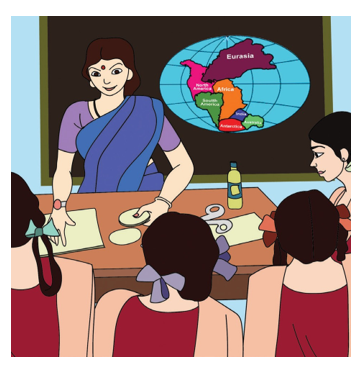
The teacher enters the classroom with giant-sized envelopes. The students are enthusiastic to know about the content of the envelopes. The teacher asks the children to sit in groups and explains the activity. Each group is given an envelope which contains seven jig-saws and a chart paper. The teacher asks them to paste the jig-saws (continents) close to each other leaving no gap between them. The teacher asks them to colour the remaining places in blue.
A group pastes the continents and comes first with the chart without any gaps in between the continents. The teacher then puts the chart on the board and the children applaud.
"What kind of picture is this? Once I have seen one like this in the atlas, " says Yazhini.
"You are right. This is Pangea, the Super Continent, and the Sea around is Panthalasa. It was 200 million years ago, when these landmasses moved away from each other to gain the present position as continents and oceans." says the teacher.
"What makes it to move madam?" asks Nila.
"Nothing other than the internal heat of the Earth," says the teacher and continues, “this lesson deals about the continents and oceans in detail”.
The Earth is covered by water which occupies 71 percent and land that occupies 29 percent of the Earth’s surface. The surface of the Earth is not even, because it has lofty mountains, deep oceans and other landforms. These landforms can be classified as:
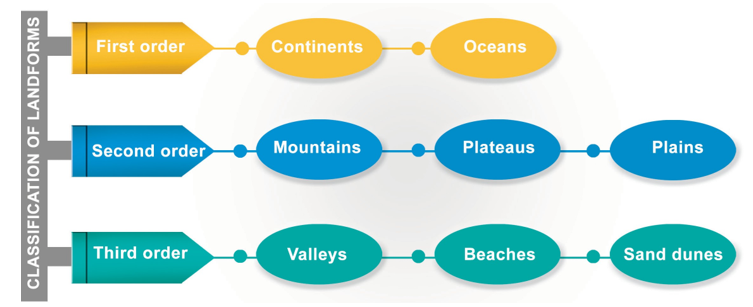
Classification of landforms
Continents and oceans are grouped as first order landforms. The vast land masses on Earth are called Continents and huge water bodies are called Oceans. There are seven continents. They are Asia, Africa, North America, South America, Antarctica, Europe and Australia. Asia is the largest continent, whereas Australia is the smallest one.
GEO CONNECT:
Land classification - Sangam period
1. kurinji mountain and its environs.
2. Mullai Forest and its surroundings.
3. Marutham agricultural lands and its adjoining areas.
4. Neithal sea and its environs
5. Palai Desert region
Which of the above landform category do you belong to?
Apart from continents, there are five oceans located on the Earth’s surface. They are the Pacific, Atlantic, Indian, Southern and Arctic Oceans. Among these oceans, the Pacific Ocean is the largest and the Arctic Ocean is the smallest.
Activity:
Required materials
• A circular plate
• 7 slices of a carrot
• A glass of water
Procedure
• Write the abbreviations A s, A F, N A, S A, A n, E u and A u on each slice in descending order of its size.
• The teacher hangs a wall map of the world.
• The students have the expansion of each abbreviation written on the board.
• Students now try to place the slices on the plate matching the position of the continents in the world map.
• They pour some water.
• The teacher shows the oceans in the world map.
• Accordingly, the students put their fingers in the respective places and repeat the names of the ocean stirring the water.
• The students learn the position, comparative size of the continent and the position of oceans.
Do you Know
Isthmus: A narrow strip of land which connects two large landmasses or separate two large water bodies.
The second order landforms are categorised as mountains, plateaus and plains.
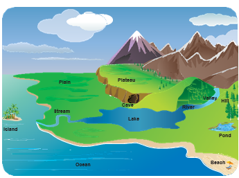
A landform that rises 600 metre above its surroundings and has steep slopes is called a mountain. Mountains are found in isolation or in groups. If the mountains extend for a larger area continuously, it is called a mountain range. These ranges stretch for hundreds or thousands of kilometres. The Himalayas of Asia, the Rocky Mountains of North America and the Andes of South America are such examples. The Andes Mountain in South America is the longest mountain range (7,000 km) in the world. The highest point of a mountain is known as its peak. Mount Everest is the highest peak (8,848 metre) in the world. Which country is Mount Everest located in?
HOTS
December 11 – International Mountain Day
Prepare slogans, posters and placards to celebrate International Mountain Day.
Activity:
Complete the given table with the help of an atlas. Follow the example.
Serial Number |
Mountain Ranges |
Peaks |
Continents |
Elevation (metres) |
1 |
The Himalayas |
Everest |
Asia |
8,848 metre |
2 |
The Rockies |
|
|
|
3 |
The Andes |
|
|
|
4 |
The Alps |
|
|
|
5 |
The Eastern Ghats |
|
|
|
HOTS: You know the importance of conservation of forests. Do you think conservation of mountains is also equally important?
Mountains are the sources of rivers. They provide shelter to flora and fauna. Here, tourism is an important activity. During summer, people go to mountain regions to enjoy the pleasing cool weather. Udhagamandalam, Kodaikanal, Kolli hills, Yercaud and Yelagiri are some of the hill stations found in Tamil Nadu.
Plateaus are the elevated portions of the Earth that have flat surfaces bounded by steep slopes. The elevation of plateaus may be a few hundred or several thousand metres. Tibetan Plateau is the highest plateau in the world. So, it is called as the ‘Roof of the world’. The flat-topped part of the plateau is called Tableland. The plateaus are generally rich in minerals. The Chotanagpur Plateau is one of the mineral rich plateaus in India. Therefore, mining is one of the major activities of the people living here. The Deccan Plateau in peninsular India is of volcanic origin.
Do you know
Dharmapuri plateau, Coimbatore plateau and Madurai plateau are found in Tamil Nadu.
Plains are flat and relatively low-lying lands. Plains are usually less than 200 metre above sea level. Sometimes they may be rolling or undulating. Most plains are formed by rivers and their tributaries and distributaries. These plains are used extensively for agriculture due to the availability of water and fertile soil.
Do you Know
The plains have been the cradle of civilisations from the earliest times. For example: the Indus in India, the Nile valley in Egypt is some of the early civilisations which developed and flourished.
They are most suitable for human inhabitation. Hence, they are the highly populated regions of the world. The oldest civilisations like the Mesopotamian and the Indus civilisations developed in river plains. The Indo-Gangetic plain in North India is one of the largest plains in the world. The plains formed by river Cauvery and Vaigai are important plains found in Tamil Nadu. Coastal plains are the low-lying lands adjacent to oceans and seas.
Activity:
Complete the given table with the help of an atlas. Follow the example.
Serial Number |
Continents |
Plateaus |
Plains |
1 |
Asia |
Tibetan Plateau |
Yangtze Plain |
2 |
North America |
|
|
3 |
South America |
|
|
4 |
Australia |
|
|
5 |
Europe |
|
|
6 |
Africa |
|
|
Activity:
Make a model of different landforms.
Prepare an album of people’s activities in different landforms.
Third order landforms are formed on mountains, plateaus and plains mainly by erosional and depositional activities of rivers, glaciers, winds and waves. Valleys, beaches and sand dunes are some examples of third order landforms.
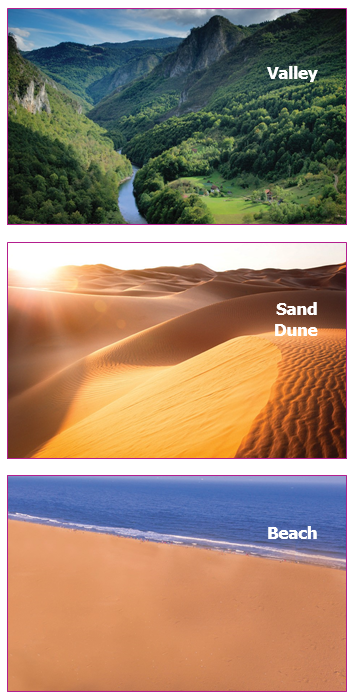
Erosion is the process of removal of surface material from the Earth's crust. The eroded materials are transported and deposited on the low-lying areas. This process is called as Deposition.
HOTS: When you are walking on the Marina beach in Chennai, which order of landform are you on?
The Earth looks blue when we see it from space. This is because, two-thirds of it is covered by water. The water is found in oceans and seas. Oceans are vast expanse of water. Seas are water bodies partially or fully enclosed by land. As you have studied previously, there are five main oceans in the world.
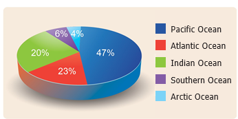
The Pacific Ocean is the largest and deepest ocean on the Earth. It covers about one-third of the Earth’s total area and spreads for about 168.72 million square kilo metre. It is bounded by Asia and Australia in its west and North America and South America in its east. It stretches from the Arctic Ocean in the north to the Southern Ocean in the south.
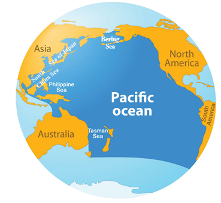
Do you know
If Mount Everest, which is the highest peak (8,848 metres) was placed into the Mariana Trench, still there would be 2,146 metres of water left. The depth in metres from the Mean Sea Level is denoted as metre power minus.
This ocean’s shape is roughly triangular with its apex in the north at the Bering Strait which connects the Pacific Ocean with the Arctic Ocean. The Bering Sea, the China Sea, the Sea of Japan, Tasman Sea and the Philippine Sea are some of the marginal seas of the Pacific Ocean. Indonesia, Philippines, Japan, Hawaii, New Zealand are some of the islands located in this Ocean. The deepest point Mariana Trench is 10,994 m- and is located in the Pacific Ocean. A chain of volcanoes is located around the Pacific Ocean called the Pacific Ring of Fire.
Do you know
The Spanish navigator Ferdinand Magellan named the ocean Pacific, meaning calm or tranquil.
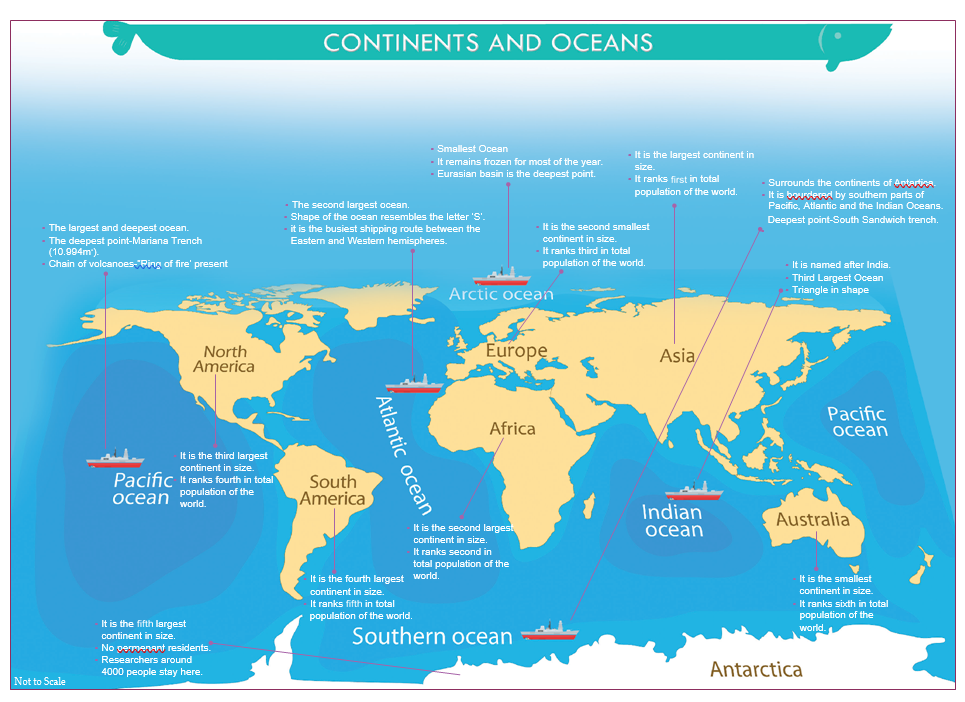
The Atlantic Ocean is the second largest ocean on Earth. It covers one sixth of the Earth’s total area and spreads for about 85.13 million square kilo metre. It is bounded by North America and South America in the west and Europe and Africa in the east. Like the Pacific, it stretches from the Arctic Ocean in the north to the Southern Ocean in the south. The shape of the Atlantic Ocean resembles the letter ‘S’. The Strait of Gibraltar connects the Atlantic Ocean with the Mediterranean Sea. The Atlantic Ocean is the busiest shipping route between the Eastern and Western hemispheres. The deepest point is the Milwaukee Deep in the Puerto Rica Trench. It has a depth of about 8600 m-. The Caribbean Sea, the Gulf of Mexico, the North Sea, the Gulf of Guinea and the Mediterranean Sea are important marginal seas of the Atlantic Ocean. St. Helena, Newfoundland, Iceland and Falkland are some of the islands found in this ocean.
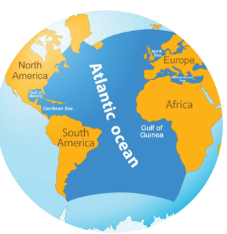
HOTS: Why are the Red Sea, Dead Sea and Black Sea named so?
The Indian Ocean is the third largest ocean on the Earth’s surface. It covers an area of about 70.56 million square kilo metre. It is named after India. It is triangular in shape and bounded by Africa in the west, Asia in the north and Australia in the east. The Andaman and Nicobar Islands, Lakshadweep, Maldives, Sri Lanka, Mauritius and the Reunion Islands are some of the islands located in the Indian Ocean. Malacca strait connects the Indian Ocean and the Pacific Ocean.
Palk Strait connects the Bay of Bengal and Palk Bay.
The Bay of Bengal, the Arabian Sea, the Persian Gulf and the Red Sea are some of the important marginal seas of the Indian Ocean. The Java trench (7,725 metre minus) is the deepest point in the Indian Ocean.
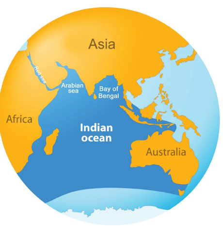
Do you know
6° Channel separates Indira Point and Indonesia
8° Channel separates Maldives and Minicoy islands
9° Channel separates Lakshadweep Islands and Minicoy islands
10° Channel separates Andaman and Nicobar Islands.
The Southern Ocean surrounds the continent of Antarctica and is enclosed by the 60°S latitude. It covers an area of 21.96 million square kilo metre. It is bordered by the southern parts of the Pacific, the Atlantic and the Indian Oceans. The Ross Sea, the Weddell Sea and the Davis Sea are the marginal seas of this Ocean. Farewell Island, Bowman Island and Hearst Island are some of the islands located in this ocean. The water in this ocean is very cold. Much of it is covered by sea ice. The deepest point in this ocean is South Sandwich Trench with a depth of 7,235 metre power minus.
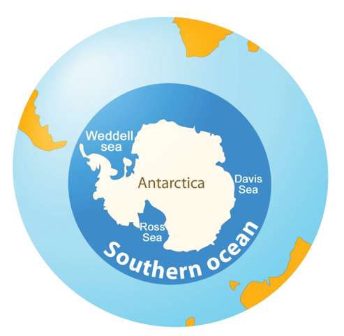
Southern Ocean and its Marginal Seas
HOTS: When you travel from Japan to California, which ocean would you travel across?
The Arctic Ocean is the smallest ocean. It covers an area of 15.56 million square kilo metre. It lies within the Arctic Circle. It remains frozen for most of the year. The Norwegian Sea, the Greenland Sea, the East Siberian Sea and the Barents Sea are some of the marginal seas of this ocean. Greenland, New Siberian Island and Novaya Zemlya Island are some of the islands located in the Arctic Ocean. The North Pole is situated in the middle of the Arctic Ocean. The Eurasian Basin is the deepest point in the Arctic Ocean, which is about 5,449 m- in depth.
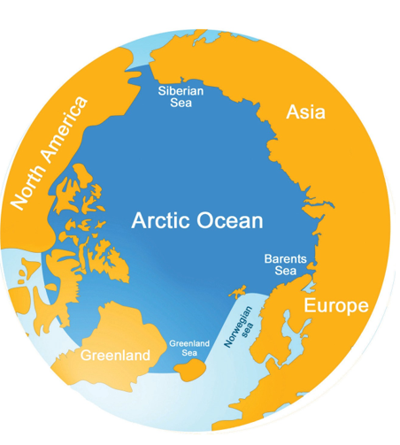
Activity:
Complete the given table with the help of an atlas. Follow the example.
Serial number |
Name of the Ocean |
Area (million Square kilo metre) |
Trenches |
Depth (metre) |
1 |
Pacific Ocean |
168.72 |
Marina |
10,994 |
2 |
Atlantic Ocean |
|
|
|
3 |
Indian Ocean |
|
|
|
4 |
Southern Ocean |
|
|
|
5 |
Artic Ocean |
|
|
|
HOTS: When you arrange the continents in ascending order according to their size, which ranks third?
The surface of the Earth is covered by 71 percent of water and 29 percent of land.
The landforms are classified as first order, second order and third order landforms.
Continents and oceans are the first order landforms.
There are seven continents and five oceans on the Earth’s surface.
Mountains, plateaus and plains are the second order landforms.
Valleys, beaches and sand dunes are the third order landforms.
Many islands and marginal seas are found in the oceans.
1. Island |
- |
A land surrounded by water on all sides. |
2. Bay |
- |
A broad inlet of the sea where the land curves inwards. |
3. Strait |
- |
A narrow stretch of water linking two large water bodies. |
4. Trench |
- |
The deepest part of the ocean. |
5. Peninsula |
- |
The land surrounded by water on three sides. |
1. Which of the following is the smallest ocean on Earth?
a. The Pacific Ocean
b. The Indian Ocean
c. The Atlantic Ocean
d. The Arctic Ocean
2. The Malacca Strait connects
a. The Pacific and Atlantic Oceans
b. The Pacific and Southern Oceans
c. The Pacific and Indian Oceans
d. The Pacific and Arctic Oceans
3. Which of the following oceans is the busiest ocean?
a. The Pacific Ocean
b. The Atlantic Ocean
c. The Indian Ocean
d. The Arctic Ocean
4. The frozen continent is
a. North America
b. Australia
c. Antarctica
d. Asia
5. A narrow strip of water that connects two large water bodies
a. A Strait
b. An Isthmus
c. An Island
d. A Trench
1. The world’s largest continent is dash
2. dash is the mineral rich plateau in India.
3. The largest ocean is dash
4. Deltas are dash order landforms.
5. The Island continent is dash.
1. Africa, Europe, Australia, Sri Lanka
2. The Arctic Ocean, the Mediterranean Sea, the Indian Ocean, the Atlantic Ocean
3. Plateau, Valley, Plain, Mountain
4. The Bay of Bengal, the Bering Sea, the China Sea, the Tasman Sea.
5. The Andes, the Rockies, the Everest, the Himalayas.
A |
B |
1. The South Sandwich Trench |
a) The Atlantic Ocean |
2. The Milwaukee Trench |
b) The Southern Ocean |
3. The Mariana Trench |
c) The Indian Ocean |
4. The Eurasian basin |
d) The Pacific Ocean |
5. The Java Trench |
e) The Arctic Ocean |
1. Plains are formed by rivers.
2. The ‘South Sandwich Trench’ is found in the Indian Ocean.
3. Plateaus have steep slopes.
Choose the correct answer using the codes given below.
a. 1 and 3
b. 2 and 3
c. 1, 2 and 3
d. 2 only
ii) Which of the following
statement (s) is/are true?
Statement 1: Mountains are second order landforms.
Statement II: The Mariana Trench is the deepest trench in the world.
a. 1 is true; II is wrong
b. 1 is wrong; II is true
c. Both the statements are true
d. Statements 1 and II are wrong.
1. Which is the highest plateau in the world?
2. Name a second order landform.
3. Which Ocean is named after a country?
4. Name the island located in the Arabian Sea.
5. What is the deepest part of the ocean called as?
1. What is a continent?
2. Name the continents which surround the Atlantic Ocean.
3. What are oceans?
4. List out the names of continents according to their size.
5. Name the oceans which surround North America and South America.
1. A Mountain and a Plateau
2. An ocean and a sea
1. Mention the classification of land forms.
2. Write a note on plateaus.
3. Plains are highly populated. Give reasons
4. Give the important features of the Pacific Ocean.
5. Write about the importance of oceans.
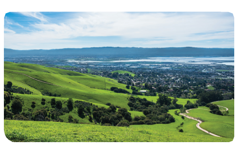
1. Name the landform.
2. What order of a landform is this?
3. By which activity of river is this landform formed?
1. Trip to the nearby area to appreciate the physical features of any kind of landform.
2. Conduct a quiz on landforms and oceans.
1. Give examples for the following using an Atlas.
a. Bay: dash dash dash
b. Gulf: dash dash dash
c. Island: dash dash dash
d. Strait: dash dash dash
2. Map reading (with the help of an atlas)
a. A sea in the east of India
b. Continents in the west of Atlantic Ocean
c. Continents in the south of Arctic Ocean
d. A strait between India and Sri Lanka
e. Oceans which surround Australia
f. Find out the Isthumuses (Create more questions)
3. On the given outline map of the world, label the continents and mountain ranges.
4. On the given outline map of the world, label oceans, seas, isthumus and straits.
Map activity
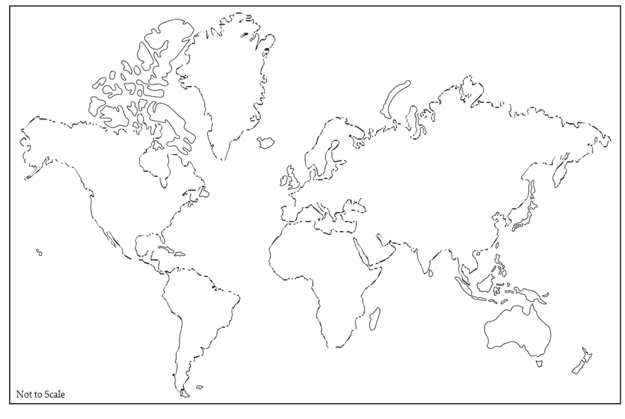
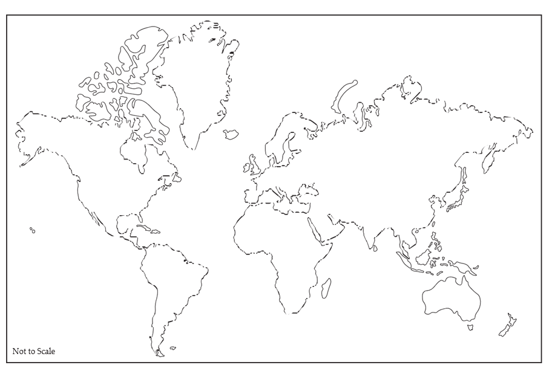
1. www.nationalgeographic.com
2. www.nationalgeographic.org/ encyclopedia/landform
3. http://mocomi.com/landforms
4. www.britannica.com.